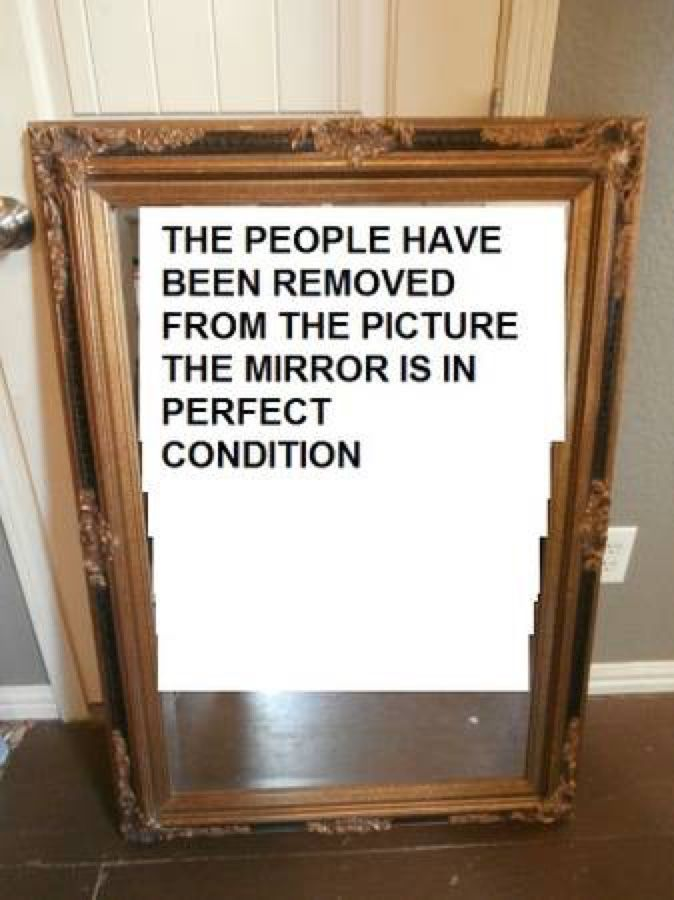

𝐋𝐨𝐬𝐢𝐧𝐠 𝐈𝐧𝐭𝐞𝐫𝐞𝐬𝐭

Today the class was so shitty I wanted to kms
It's a bit scary to start losing interest in the world around you.
Like, where tf did it go?
The drive you had for improving literally
Just evaporated from your body and got replaced with apathy.
I guess you just failed one too many times and now your brain is
doing that trauma response thing.
Against your will.
smh
You only care about like..
A handful of people now.
You used to wanna make friends in real life and talk to your classmates more but now you just... dont.
You do but then it is just all fake acting you removed them all from your contacts and social media.
(They are not gonna help you in future then
why should you be friends with them in a first place huh?
I'm right aren't I? Like what even is the point?
They are gonna move to other country and would not wanna even meet you again.)
And it's hard to fake it too...
You don't want to be this way...
You wanna keep trying,
You cant just be alone.
Even though its not so bad...but it is bad.
ugh